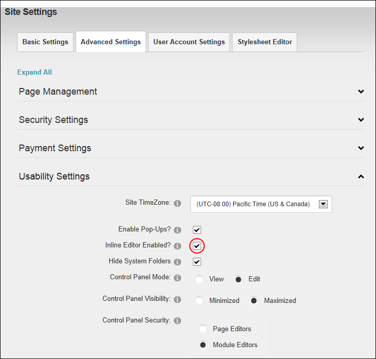
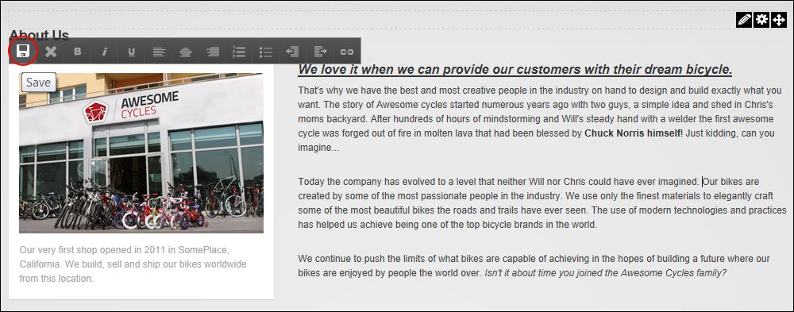

Enabling/Disabling Inline Editing
How to enable or disable inline editing of all module titles and inline editing of module content for the HTML (text/HTML) module. This options is enabled by default.
- Navigate to Admin >
 Site Settings.
Site Settings.
- Select the Advanced Settings tab.
- Expand the Usability Settings section.
- At Inline Editor Enabled?, to enable inline editing - OR - to disable inline editing.

-

Editing HTML content inline
-
See "Editing Module Title Inline"
-
See "Editing Content Inline"